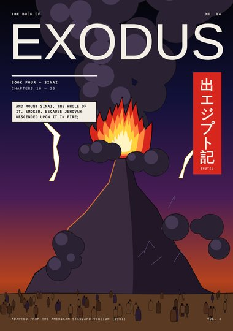
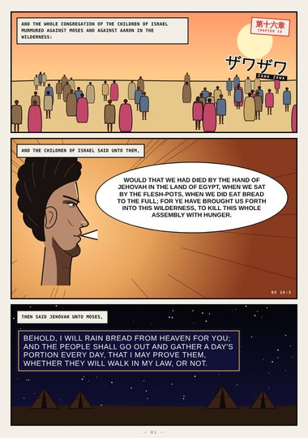
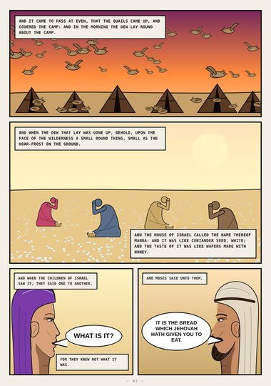
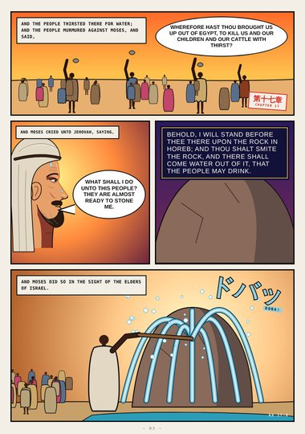
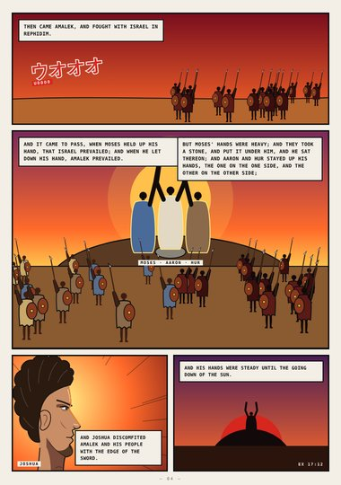
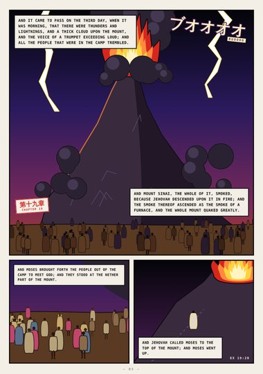
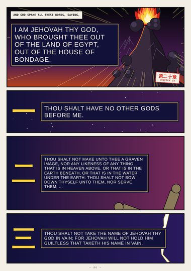
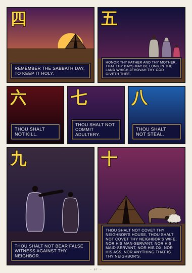
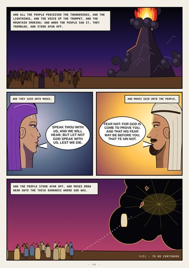

Exodus · Book Four · Exodus 16–20
Sinai
Manna and quails, water from the rock, Aaron and Hur holding up Moses' hands, the mountain on fire, and the ten commandments.
Start reading ›Pages

CoverCoverExodus 16–20
Page 1Bread from HeavenExodus 16:2–4
Page 2MannaExodus 16:13–31
Page 3The Rock in HorebExodus 17:3–6
Page 4Hands Held UpExodus 17:8–13
Page 5The Mountain SmokedExodus 19:16–20
Page 6I Am Jehovah Thy GodExodus 20:1–7
Page 7The Ten WordsExodus 20:8–17
Page 8Afar OffExodus 20:18–21